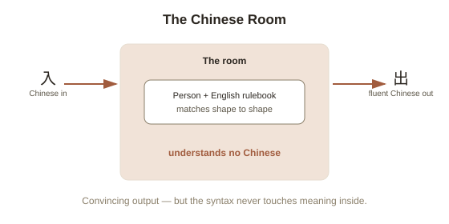

Chapter 3: The Chinese Room — Can a Program Understand Anything?
Chapter 2 ended on an uncomfortable question: if a fluent, confident explanation can be generated without any real access to the actual reasons behind it, how do we know when understanding is genuinely happening versus just being convincingly imitated? Philosopher John Searle posed a version of exactly this question about machines in 1980, with a thought experiment that's still argued about today, in philosophy departments and — increasingly — in conversations about the large language models many people now talk to daily.
The setup: a room, a rulebook, and no Chinese
Imagine a person who speaks only English, locked in a room. Slips of paper covered in Chinese characters get passed in through a slot. The person has no idea what any of it means — but they have an enormous rulebook, written entirely in English, that tells them: "when you see this exact sequence of squiggles, write down this other sequence of squiggles in response," covering every possible input. Following the rulebook mechanically, the person produces responses in Chinese so fluent and appropriate that native Chinese speakers outside the room are convinced they're communicating with someone who genuinely understands Chinese. The person inside, doing all the actual work, understands not a single word of it. They're just matching shapes to shapes according to a set of rules, with zero grasp of meaning.
Searle's target: syntax without semantics
Searle built the thought experiment to attack a specific claim he called Strong AI (the position that a computer running the right program doesn't just simulate a mind — it genuinely has one, complete with real understanding and consciousness), as distinct from Weak AI (the more modest claim that a program can be a useful tool for studying or simulating minds, without literally possessing one). His argument: a digital computer, at bottom, does exactly what the person in the room does — it manipulates symbols according to formal rules, based purely on their shape, with no access to what those symbols actually mean. Searle's core claim is that syntax (rules for manipulating symbols based on their form) is not sufficient to produce semantics (genuine meaning, or understanding of what a symbol refers to) — no matter how sophisticated the rule-following gets, or how convincing the output looks from outside.

The most famous rebuttal: maybe the room understands, even if the person doesn't
The Systems Reply is the objection Searle spent the most time addressing, and arguably the strongest one: sure, the person inside doesn't understand Chinese — but nobody claimed they would. The claim is that the whole system — person, rulebook, room, all of it working together — understands Chinese, the same way no single neuron in your brain understands English, but the whole brain does. Searle's counter was to tighten the thought experiment: imagine the person memorizes the entire rulebook and does all the symbol manipulation in their head, with no external paper or room at all. Now the person is the whole system, with nothing left outside of them — and Searle insisted they still wouldn't understand a word of Chinese, they'd just be very good at running the algorithm from memory. Critics of this reply argue Searle is trusting his own intuition about what a memorized, internalized rule-following process would "feel like" a little too confidently — which is exactly the kind of claim that's hard to settle by thought experiment alone.
Why this argument still matters, decades later
The Chinese Room predates modern large language models by four decades, but the shape of the argument maps onto today's debates almost exactly: a system trained to predict and produce fluent, contextually appropriate text, purely from statistical patterns in its training data, with no verified access to what any of it refers to in the world. Whether that constitutes genuine understanding, or an extremely sophisticated version of matching shapes to shapes, is precisely Searle's original question, now argued about with vastly more capable rooms. Nothing about the passage of time has settled it — it remains a live, contested question exactly because "does fluent, correct output require real understanding underneath it" turns out to be much harder to test from outside than it first appears.
Try this
Ideas for noticing or testing this in your own life.
- Next time you use an AI chatbot, notice the pull to describe it as "understanding" or "knowing" something — then ask yourself what evidence, specifically, would distinguish genuine understanding from an extremely good version of the room's rulebook.
- Try explaining the Systems Reply to someone else, then try Searle's memorization counter-reply — notice which one your own intuition finds more convincing, and see if you can articulate exactly why.
Worth pulling on?
A few loose threads from this chapter — if any of these genuinely grab you, that's a good sign of where to go next.
- Searle's argument specifically targets computation and symbol manipulation — but there's a whole separate theory of mind that defines mental states purely by the causal role they play, regardless of what they're made of, which seems to cut against Searle's conclusion. → The subject of the next chapter: functionalism and multiple realizability.
- The question of what language actually requires to work — rules alone, or something more — connects directly to a live debate about how humans themselves acquire language. → Already in the library: Language and Thought covers that debate from the human side.